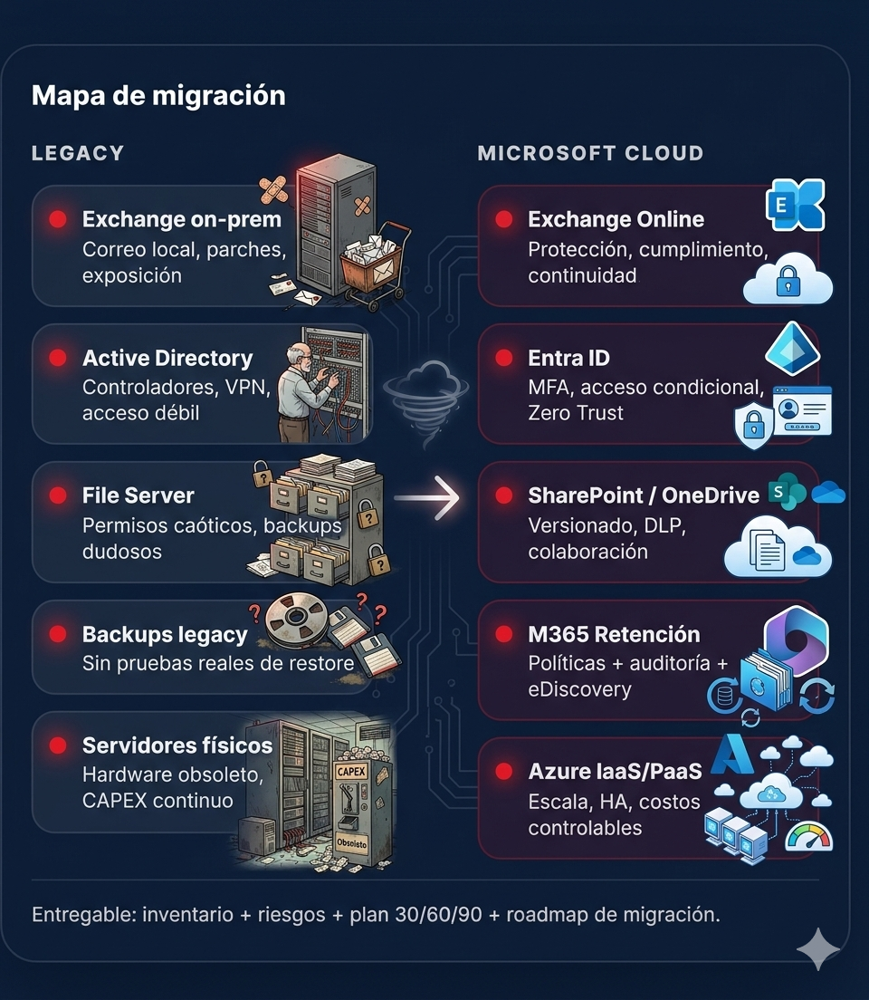

De servidores obsoletos
a Microsoft Cloud, sin caos.
La mayoría de las empresas aún dependen de correo local, controladores de dominio físicos y file servers heredados. Eso significa servidores viejos, parches constantes y equipos de TI atrapados apagando incendios. Nubik migra esa infraestructura a Microsoft 365, Entra ID y Azure— con un plan claro, seguro y sin interrumpir la operación

Que se identifiquen rápido
Esto es lo que vemos todos los días en PyMES con TI “heredada”.
Exchange on-prem
Correo local, parches constantes y exposición pública.
→ Exchange OnlineActive Directory
Controladores físicos, VPN dependiente, acceso débil.
→ Entra ID (Identidad Cloud)File Server
Permisos caóticos, backups dudosos, sin trazabilidad.
→ SharePoint / OneDriveBackups Legacy
Sin pruebas reales de recuperación ni auditoría.
→ Retención M365 + VersionadoSeguridad Perimetral
Firewall + VPN como única barrera.
→ Zero Trust + MFAServidores Físicos
Hardware obsoleto, CAPEX continuo y riesgo operativo.
→ Azure IaaS / PaaSCómo los migramos sin romper producción
Control de cambios, ventanas, validación y evidencia.
Diagnóstico
Inventario de AD, correo, servidores, archivos, DNS, licencias y riesgos reales.
Diseño
Arquitectura objetivo: Entra ID, Zero Trust, M365, retención y Azure según carga.
Ejecución
Migración controlada: Exchange, identidad, archivos y/o servidores. Validación por etapas.
Operación
Gobierno continuo: políticas M365, auditoría, runbooks y monitoreo útil.
Riesgo y costo bajo vs beneficio
El punto no es “migrar por moda”. Es reducir riesgo y costo oculto con beneficios evidentes.
Costo oculto (Legacy)
- Horas correctivas + parches
- Hardware / refacciones
- Downtime silencioso
- Riesgo ransomware
Riesgo operativo
- Backups sin restore
- Accesos sin gobierno
- VPN como dependencia
- Auditoría sin evidencia
Beneficio (Microsoft Cloud)
- MFA + acceso condicional
- Retención y eDiscovery
- Colaboración real
- Escala y continuidad
Agenda diagnóstico de migración
Revisamos tu infraestructura actual y te devolvemos una lectura clara: qué está en riesgo, qué debe modernizarse primero y cómo migrar a Microsoft Cloud de forma ordenada.